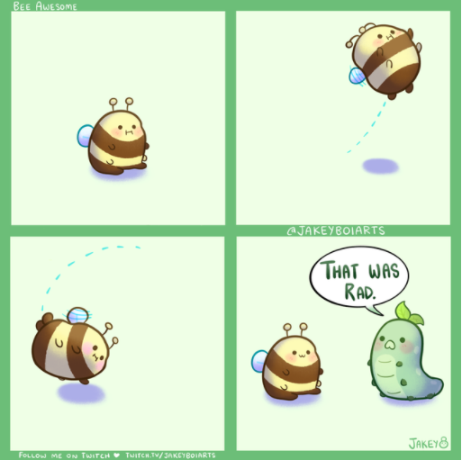
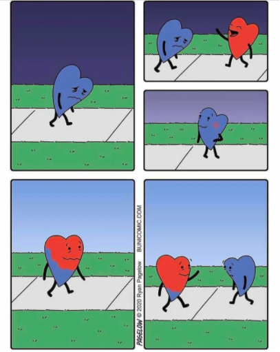

It is really hard on family or friends to lose someone to suicide. The grief process is always very difficult and can have an large impact on an individual's mental health.
According to Harvard Health Publishing, each suicide "leaves behind an estimated 6 or more 'suicide survivors'--people who've lost someone they care about deeply and are left grieving and struggling to understand." The grief process is always very difficult and can have an large impact on an individual's mental health.
 If someone you know has lost a family member or friend, be empathetic and provide them with support. Loss survivors struggle with mixed emotions such as shame, shock, anger, grief, and fear. Be sure to let them know you are always open to listen to and support them.
Using the name of the lost one can make it easier to talk about them and shows that you have not yet forgotten about them.
These days can be especially difficult on loss survivors because they bring back memories and put an emphasis on the lost one's absence.